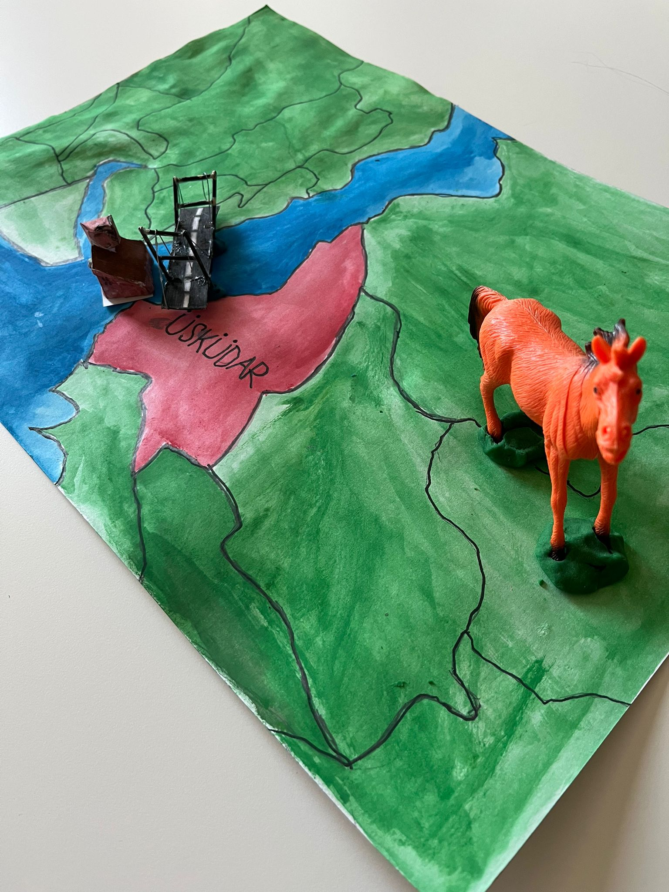

Bu tasarımda atasözünün taşıdığı acele ve yetişememe duygusunu göstermeye çalıştık. Harita üzerinde ilerleyen at figürü, kaçırılmış fırsatları ve geri dönülmeyen anları temsil ediyor.
Bu nesneyi tasarlarken atasözünün kıymetini ve verilmek istenen mesajı çok güzel ilettiğini fark ettik. Atasözünün oluşmasına vesile olan durumu da araştırmayı ihmal etmedik.